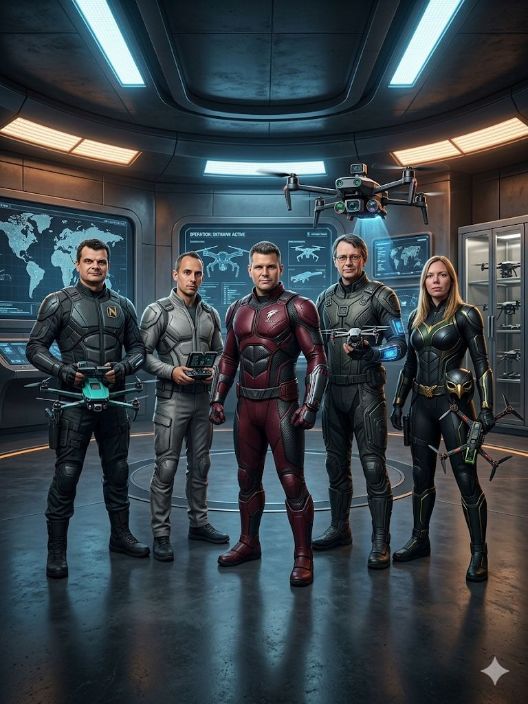

02 / THE STORY
No aerospace background.
No problem.

We started with no drones, no aerospace experience and no existing team. What we had was curiosity, engineering experience and a willingness to move faster than most people think is reasonable.
In just 14 weeks, we built an autonomous drone control system from scratch and qualified for the international finals of the MBDA & brigkAIR Swarm Drone Challenge.
The real point isn't drones. The real point is what happens when a small technical team fully embraces AI-assisted development, rapid iteration and direct execution.
That's what ToBeDefined.ai is really about.
“This isn't a concept.
This already happened.”